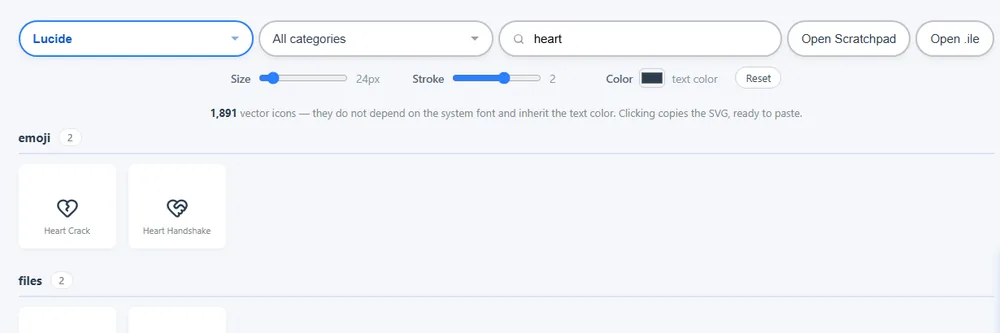
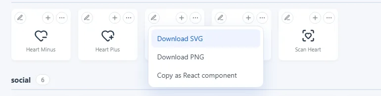
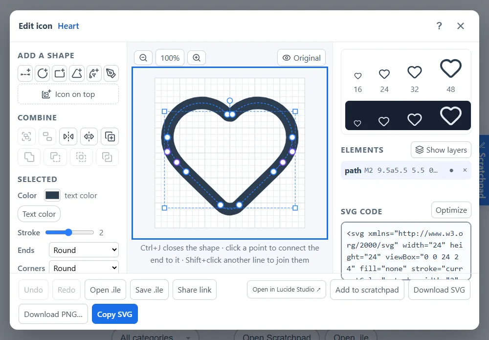
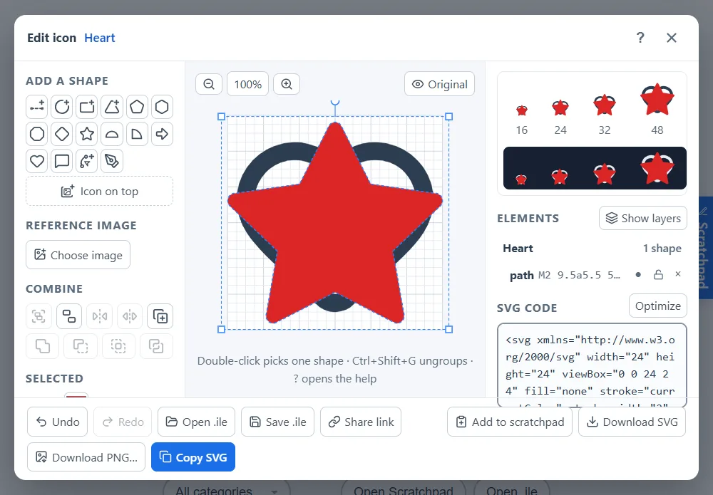
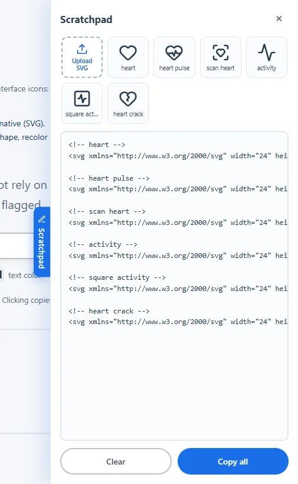

指南
Icon Library 的全部功能，一步一步说明。可以通过目录直接跳到某个主题。
使用方法
- 点击选择按钮选择一个图标集。页面默认打开 Lucide，或你上次选择的图标集；页面打开期间每个图标集都会保留在缓存中。
-
使用全部类别（可多选）和搜索框来缩小范围，按 / 键可直接跳到搜索框。搜索会匹配图标的名称和关键词，所以“delete”也能找到垃圾桶，匹配度高的结果排在前面。名称和关键词都是英文。没有结果时，页面会提供清除搜索或类别的按钮，并可在其他图标集中搜索同一个词。在 Bootstrap Icons 中，线框和填充只显示大多数图标都有的两个版本之一（地址中的
?style=outline或?style=filled）。 -
在“大小”“描边”“颜色”控件中设置样式。它们作用于你复制、下载或发送到 Scratchpad 的所有内容，预览也会跟随描边和颜色变化。只有 Lucide 和 Feather 有描边；表情符号保留自己的颜色。装饰性会添加
aria-hidden="true"，让屏幕阅读器跳过旁边已有文字说明的图标。 - 单击图标复制其 SVG（或表情字符）。右键复制备选内容：矢量图标集复制图标名称，表情符号则复制包裹在 SVG 中的表情。
-
使用每张卡片上的按钮：
- + 将图标添加到 Scratchpad；
- ⋯ 打开下载（SVG、按所选大小导出的 PNG）以及可复制为 React、Vue 或 Svelte 组件、data URI，或使用文字颜色的 CSS 类；
- 铅笔（所有矢量图标集）打开图标编辑器。


图标编辑器
点击卡片上的铅笔，图标会在网格上打开，随时可以修改。图标会带着你选择的大小、描边和颜色。

- 修改形状：在列表或网格中选择一个形状并拖动它的点。曲线会显示控制点，并以虚线相连；移动曲线上的点时，它的控制点会一起移动。
- 移动：拖动形状，或使用键盘方向键或按钮。点会对齐到网格（1、½ 或 ¼ 单位，或不对齐）。
- 变换：旋转 90° 或 45°、翻转、放大或缩小——作用于所选形状；未选择任何内容时作用于整个图标。
- 添加和删除：添加直线、圆形、矩形和曲线；隐藏某个形状以查看去掉它后的效果，或将其删除。
- 组合图标：叠加图标会在 Lucide、Feather 和 Bootstrap 中搜索，并把另一个图标叠放在当前图标上，自动适配到同一网格并保留其原有样式——比如把 Bootstrap 的填充星形放进 Lucide 的线框爱心里。每个图标在列表中都有一个标题，点击即可整体选中，以便移动、旋转或缩放。
- 选择多个形状：在空白处拖动，矩形碰到的内容都会被选中。按住 Shift 可从任意位置拖动并添加到选择，或用 Shift+单击添加或移除形状。Ctrl+A 全选，Esc 清除选择。可以一起移动、旋转、缩放、改色、调整顺序、复制或删除。编组（Ctrl+G）让它们保持在一起；之后单击选中整个组，双击选择单个形状。叠加的图标也是如此，取消编组（Ctrl+Shift+G）可释放形状。
- 连接、分割和排序：连接（Ctrl+J）通过最近的端点把两条开放线条连成一条。选中一条开放线条时会闭合形状；如果同时选择了一个点，则把最近的端点连接到该点。分割会把光标变成准星：单击要剪开线条的位置，或按 Esc 取消。“变换”中的四个顺序按钮可把形状后移或前移一层，或直接移到最底层或最顶层。? 按钮或 ? 键会显示所有命令及其按键和鼠标操作。
- 缩放：鼠标滚轮、画布上方的放大镜按钮或 + 和 − 键会以指针为中心缩放；在手机上用两指捏合。按住空格键拖动（或用鼠标中键拖动）可平移视图，点击百分比或按 0 可重新显示整个图形。
- 手动调整大小和旋转：选中的内容会出现带控制点的边框。拖动一角可按比例调整大小，并对齐到网格；拖动边框上方的圆点可按 15° 一档旋转。按住 Shift 可自由调整。需要精确数值时，在已选面板中输入 X、Y、宽、高。
- 对齐、吸附和复制：对齐按钮可让多个形状彼此对齐——或将一个形状、编组或整个图标在图标区域内居中——并让三个或更多形状均匀分布。拖动时，点和形状会吸附到其他形状和图标中心，并显示粉色参考线；按住 Alt 可自由拖动。复制一份（Ctrl+D）会在所选内容旁边复制一份，Shift+方向键一次移动十格。
- 用钢笔绘制：现成形状旁边的钢笔按钮可以画出自己的线条。点击添加锚点，放下锚点时拖动即可生成曲线。点击第一个点可闭合形状；按 Enter 或点完成结束开放的线条，按 Esc 取消。
- 端点、拐角和最后检查：端点（圆头、平头或方头）和拐角（圆角、尖角或斜角）决定线条的收尾样式。按住原图可查看打开时的图标，对比浅色和深色背景上的预览，代码上方的优化会删除不影响图形的内容。
- 不会丢失：删除、分割、连接或优化后，底部的提示里有撤销按钮。正在进行的编辑也会保存在浏览器中：如果页面重新加载或标签页关闭，下次打开编辑器时会提示恢复；你自己关闭编辑器则会丢弃它。在列表中拖动形状可调整它在所属图标或编组内的顺序，✎ 可重命名编组。画布获得焦点时，Tab 会选中下一个形状，屏幕阅读器会读出是哪一个。
- 在手机上：绘图始终可见，工具位于下方的标签中：形状、编辑、变换、元素和导出。绘图旁的工具栏提供撤销、重做、删除和多选，多选时每次点按添加或移除一个形状。也可以按住形状半秒来添加或移除。第一次点按只会选中形状，避免误移；选中后再拖动。
- 填充形状：选中闭合形状后，填充会用线条颜色填充其内部，再次点按可移除。要填充开放线条，请先用连接将其闭合。
- 渐变：在所选形状下方展开渐变，点一个推荐（日落、海洋、紫色……），或选两个颜色后点应用渐变。可选线性（带方向）或径向，以及用于填充（闭合形状）还是描边——描边对直线也有效。一个渐变覆盖所有选中的形状，移动或缩放时会跟着走。移除渐变会保留第一个颜色。Iconlibrary 只接受纯色，发布前请移除。
- 查看顺序：元素列表上方的查看图层会用不同颜色显示每个形状，并标出最前和最后的形状。一个组算作一个色块，只有一种颜色。这只改变显示，图标本身不变。
- 颜色：在已选面板中为每个形状或每个图标设置独立的颜色和描边宽度。文字颜色会恢复为继承周围文字的颜色；拥有独立颜色的形状无论粘贴到哪里都会保持该颜色。
-
保存后继续编辑：保存 .ile 会把项目下载为
.ile文件——一个小型文本文件，保存纯 SVG 会丢失的信息：每个形状来自哪个图标、被隐藏的形状以及名称。之后可以在编辑器中或主页搜索框旁用打开 .ile 再次打开，也可以把文件拖到编辑器上。编辑过程中打开文件的操作可以撤销。 - 代码：网格旁的 SVG 代码会随每次修改同步更新，你也可以直接在其中输入。预览会以 16、24、32 和 48 像素显示结果。
- 撤销和重做（Ctrl+Z、Ctrl+Y），然后复制、下载编辑后的图标或将其发送到 Scratchpad。Lucide 和 Feather 图标也可以在 Lucide Studio 中打开，这是一个功能更高级的独立在线编辑器。

Scratchpad
右侧边缘的 Scratchpad 标签会打开一个抽屉，方便你边浏览边收集图标。每个图标都会以带名称的 HTML 注释加入，后面紧跟它的 SVG，结果可以直接粘贴到项目中。你也可以自由输入。全部复制复制全部内容，清空则清除内容。文本保存在你的浏览器中，下次访问时仍然在。文本上方会以网格显示其中的图标：点击图标即可在编辑器中打开，保存到 Scratchpad 会把编辑后的版本放回原处。上传 SVG 可从电脑添加 SVG 文件（也可拖放到网格上），并像粘贴到编辑器的代码一样经过清理。

面向 AI 助手
AI 助手可以创建图标，并以链接的形式交给你，链接会在这里的编辑器中打开图标，供你继续调整。图标就保存在链接本身中（# 之后），因此永远不会发送到我们的服务器。在编辑器中，分享链接可以为你自己的项目生成同样的链接。面向 AI 的说明：llms.txt。
分享搜索
地址栏会跟随你正在查看的内容——例如 ?set=lucide&q=arrow。复制地址即可分享搜索或将其加入书签。
键盘快捷键
| 按键 | 作用 |
|---|---|
| / | 跳到搜索框 |
| 单击 | 复制图标（SVG 或表情符号） |
| 右键 | 复制备选内容（名称，或作为 SVG 的表情符号） |
| Esc | 关闭面板、菜单、Scratchpad 和编辑器 |
| ↑ ↓ | 在图标集列表中切换图标集 |
| ← → ↑ ↓ | 编辑器：移动所选形状、图标或整个图形 |
| Delete / Backspace | 编辑器：删除所选节点（先单击节点），否则删除所选形状或图标 |
| Ctrl+Z | 编辑器：撤销 |
| Ctrl+Y / Ctrl+Shift+Z | 编辑器：重做 |
| Ctrl+C / Ctrl+V | 编辑器：复制并粘贴所选形状或图标 |
| Ctrl+D | 编辑器：复制一份所选内容 |
| Shift + ← → ↑ ↓ | 编辑器：移动十格 |
| Tab | 编辑器（画布获得焦点时）：选中下一个形状 |
| + / − / 0 | 编辑器：放大、缩小、适应画布（也可用鼠标滚轮） |
| 空格 + 拖动 | 编辑器：平移视图 |
| Alt + 拖动 | 编辑器：拖动时不吸附其他形状 |
| Enter | 编辑器（使用钢笔时）：结束线条 |
主题、语言和偏好设置
页面会跟随系统的浅色或深色主题；页眉中的按钮可以切换。语言根据浏览器自动识别，也可以在旁边的选择框中更改。这两项选择、所选的大小、描边和颜色以及 Scratchpad 中的文本都会保存在你的浏览器中，下次访问时仍然在。
请我喝杯咖啡
Icon Library 是免费的。如果它对你有帮助，请我喝杯咖啡按钮（通过 Stripe 安全支付）可以帮忙支付服务器、域名和维持网站运行的工具费用。作为感谢，自付款起 30 天内你可以在 Iconlibrary 发布和编辑自己的图标，并且在网站展示广告时不会看到广告。
付款后你会得到一个支持者代码。如需在其他设备上也使用这些权益（最多 3 台），请在那台设备上打开同一个按钮并输入代码。只有在可以付款时才会显示该按钮。
支持者还可以在“关于”页面评价 Icon Library：1 到 5 星，加一条评论。使用 GitHub、Google 或 Microsoft 登录可获得“已验证”标记，也可以只填一个名字。每条评价都会先审核再显示。
发布到 Iconlibrary
Iconlibrary 是社区图标集：由支持者在编辑器中绘制、经过审核并与所有人共享的图标。它和其他图标集一样出现在图标集列表中。
- 在编辑器中打开一个图标，绘制或调整它。
- 点击发布到 Iconlibrary，填写名称，最多选择 3 个类别，并可选填写署名（你的名字或网站）。
- 在你请咖啡的那台设备上，支持者代码会自动填好；在其他设备上请手动输入。
- 确认图标由你创作（或你有权分享）并以 MIT 许可证发布，然后提交。审核通过后它会出现在 Iconlibrary 中。
只能发布基本形状——直线、圆、椭圆、矩形、折线、多边形和路径（path）。不接受品牌标志或复制其他图标的作品。